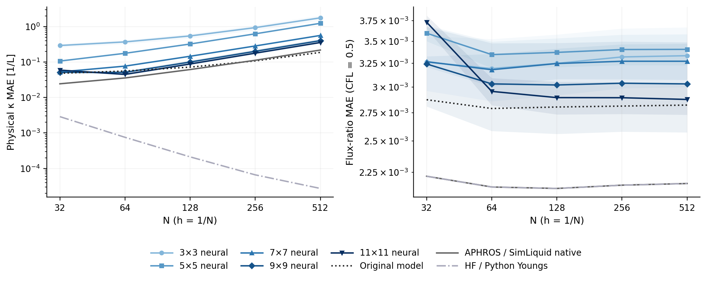
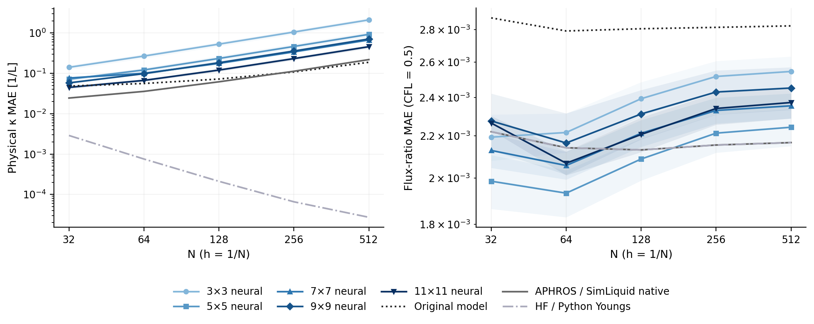
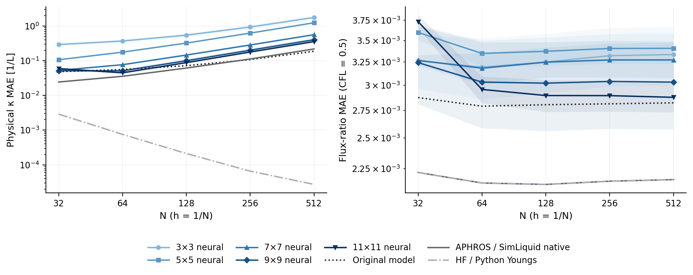
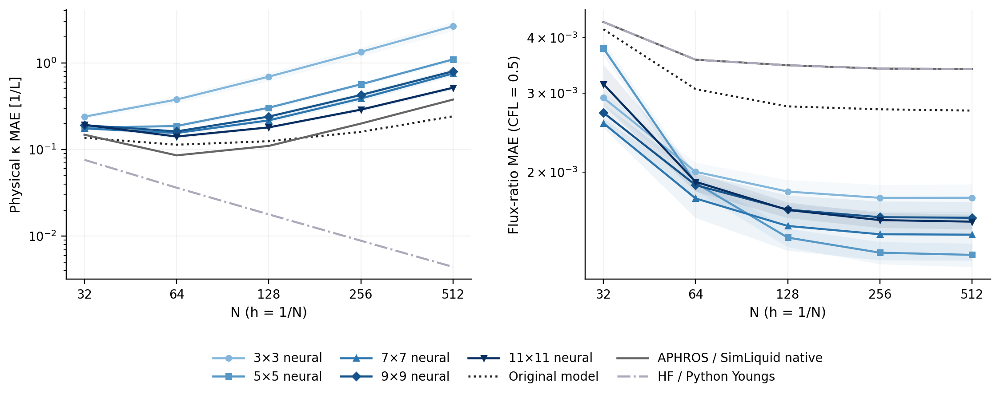
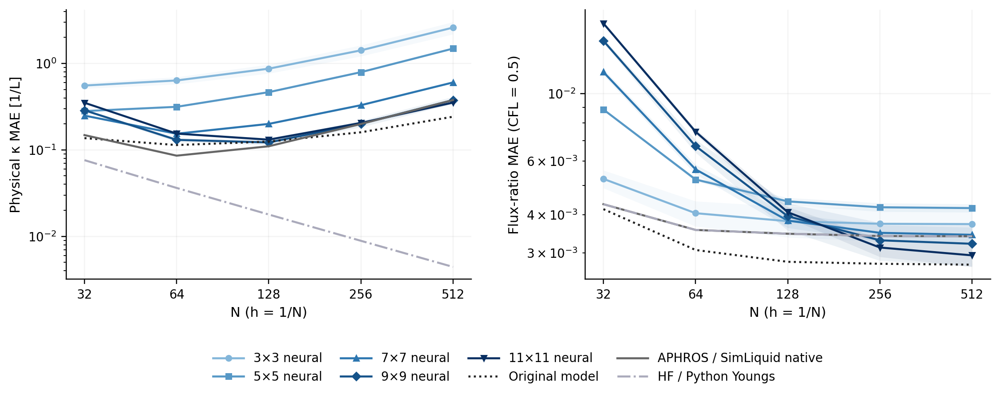
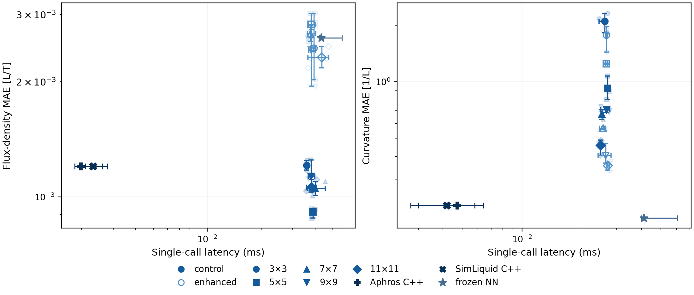

对应原来三条问题，结论是什么？
网格加密，是否就会更准？
仍没有得到稳定的物理算子收敛。通量误差在细网格出现平台；神经曲率的物理误差仍会上升。实际配置中的粒子曲率也出现细网格误差上升；它与此前那条收敛较好的独立高度函数曲线不是同一个算子。
相同推理时间比精度、相同误差比时间呢？
这次已实际比较SimLiquid与APHROS原生代码，同一CPU核心、同双精度，计入数值法自身必要的法线估计、PLIC重构和粒子拟合。当前神经实现没有进入原生数值法的推理时间预算；部分误差目标可以达到，但需要更多时间。
改数据、扩大邻域能改善吗？
能改善部分误差，但收益不单调。9×9不总好于7×7，11×11在部分曲率测试中更好；原来的5×5通量模型仍常比9×9和11×11更合算。增强数据的收益更偏向曲率，不能同时保证通量更好。
更宽的邻域，有用但没有全面胜出
新增24组模型，均从头训练12000步；两种数据策略、两个算子、两个新宽度和三个配对种子。训练几何重新逐格积分11×11，9×9取中心子块；原7×7和标签逐位一致。参数规模与旧对照匹配在0.45%以内。
在N128的多项式测试中，增强数据9×9的物理曲率误差约0.122，成熟原模型约0.125，实际粒子曲率约0.110。它接近原模型，但还不能称为跨任务领先。在独立圆、椭圆与弱正弦测试中，增强数据11×11约0.0885，仍差于成熟原模型的0.0722和实际粒子曲率的0.0617。


N512多项式测试中，增强数据11×11的曲率误差约0.353，略低于实际粒子曲率的0.377；成熟原模型约0.242，高度函数参考约0.00443。独立几何上则没有这一优势。因此不能概括成“越宽越好”或“宽邻域始终胜过传统方法”。
与SimLiquid、APHROS真正比较推理时间
以下例子固定独立几何、N512、每次4096个邻域。原生C++和编译TorchScript神经模型均采用同一CPU核心、双精度，输入是同一份量化后的体积分数。时间不包含压力求解、PDE推进、数据传输和邻域提取。
通量：可以换来更低误差，时间代价很大
APHROS的通量密度误差约0.00120，推理时间约0.0428毫秒；SimLiquid达到相同显示精度，约0.1088毫秒。一个达到这一误差要求的新神经组是对照数据11×11：误差约0.00106，推理时间27.05 ± 2.26毫秒。这里没有同CPU加速。
曲率：达到目标的原神经模型也更慢
APHROS与SimLiquid的物理曲率误差约0.219，分别需要7.69和6.43毫秒。全部十个新三种子组均未达到这一误差目标；成熟原神经模型可以达到，误差约0.188，但推理时间约53.61毫秒。原模型是单个固定参考，不为它编造种子标准差。
在N128，成熟原模型的误差约0.0722，未达到原生粒子曲率约0.0617的目标。所有这些“达标”都限定在对应网格、批量和测试集，不外推到未测条件。


为什么现在的时间比之前的GPU结果长？
这里的主比较是同CPU、同双精度。此前约0.2毫秒的结果来自GPU上的批量推理，硬件与实现不同。CPU原ONNX和GPU结果仍单独保留为部署层，不能把跨设备倍数称为同设备算法加速。成熟原ONNX虽然输入为float32，内部仍包含double算术。
收敛趋势和失败样本，一起看
在独立几何集上，两个原生方法覆盖率都是100%。多项式集的原固定集合中，每档网格3100个点，原生粒子曲率有20个平面样本无有效输出，成功率99.35%。这些输出没有被改成零，也没有被悄悄删掉。
下面可分别查看原固定集合和所有方法共同可用的集合。后者的多项式曲率样本数为3080，属于条件误差；原始集合缺少输出时，不将它写成完整任务达标。这里的无有效曲率输出也不等于整个APHROS模拟器崩溃。
实际粒子曲率在共同可用集合上的误差，从N128到N512，多项式几何约由0.110升到0.377，独立几何约由0.0617升到0.219。独立高度函数参考则继续改善。神经模型、粒子法和高度函数需要分别讨论，不能用“传统曲率”一个名称代替。
完整表格
正在载入完整表格……
全部网格、分层与推理算术
| 方法 | MAE ± 种子标准差 | 本集合样本数 | 原集合输出成功率 | 原集合样本数 |
|---|
无完整输出时不显示虚假的全任务误差。相同显示精度的APHROS与SimLiquid是两个代码实现，各自推理时间分别测量；不是复制的数据或两次独立算法证据。固定参考只列单值，不写±0。
同CPU双精度的完整时间表
| 方法 | 共同可用点MAE | 推理时间 [ms] | P5–P95端点均值 [ms] | 原任务成功率 |
|---|
三个种子：每个模型先取155次正式调用的中位数，再给组均值±样本标准差；固定参考给单次实现的中位数与分位范围。全部五档批量、两个网格和两个测试集均实测。
完整图册
原固定支持、共同可用支持和不同推理层均保留。同一几何上两种支持完全相同时，图册合并相同图片，下载包仍保留原文件名。
展开全部图片














全部图表、结论和方法
正式CPU比较共2560种配置、396800次调用，另有51200次预热。每个配置20次预热、5组各31次测量，方法、算术、几何、网格和批量按固定随机种子交错。早期199个未满足隔离条件的计时全部排除。
原生算子为规则内部网格的局部依赖切片，直接编译调用原源码。APHROS使用原配置的粒子曲率，包含必要的法线、PLIC片段和粒子拟合；SimLiquid还核对了原公开整块接口的中心输出。没有把NumPy复写冒称原生方法，也没有进行新的完整流体模拟。
所有神经候选仍为纯网络，没有几何高度先验、几何修正或几何fallback。最终12000步阶段仍有部分验证误差改善，结论限定于这套参数匹配和统一预算，不代表任意网络能达到的上限。